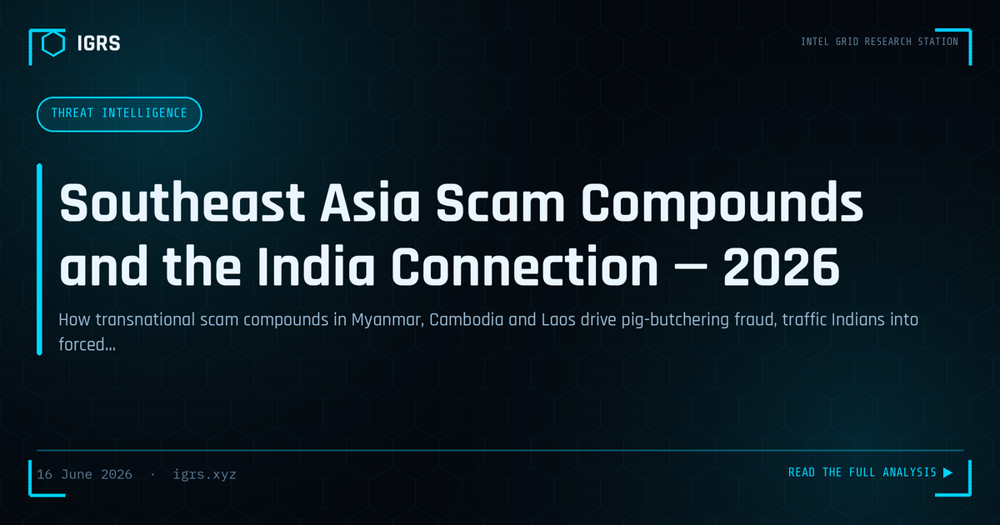

Southeast Asia Scam Compounds and the India Connection — 2026
The fraud that drains an Indian victim's bank account and the forced-labour compound that runs it are two ends of the same transnational machine. In 2026 the so-called "pig-butchering" industry has become one of the largest organised cyber-enabled crimes in the world, and India sits on both sides of it — as a major source of victims and as a country whose citizens are trafficked into the compounds to do the scamming. This briefing explains how the system works, the human-trafficking dimension, the 2026 global enforcement wave, and what individuals, families and investigators can do.
What "pig butchering" actually is
Pig butchering — a translation of a Chinese term referring to fattening a pig before slaughter — is a romance-investment scam. It begins with a low-pressure approach: a "wrong number" text, a friendly message on a dating or social app, a professional-looking connection request. Over days or weeks the scammer builds a relationship, then gradually introduces the idea of a lucrative cryptocurrency or trading opportunity. The victim is steered onto a fake platform that displays fabricated profits, encouraged to invest more, sometimes allowed a small "withdrawal" to build confidence — and then blocked entirely when they try to take real money out. By the time the victim realises, the funds have been layered through cryptocurrency and mule accounts and are effectively gone.
The industrial scale
This is no longer a cottage operation. What began as small networks running simple scripts has grown into large compounds employing hundreds or thousands of workers, organised into specialised teams for social engineering, fake-platform engineering, and financial laundering. A widely cited study estimated worldwide losses of roughly USD 75 billion to Southeast-Asian-based cyber scams between 2020 and 2024; the FBI attributed around USD 2.6 billion of US losses to pig-butchering and related crypto fraud in 2022 alone. Blockchain-analysis firm Chainalysis has reported that scam revenues grew on the order of 40% annually through 2024, with deposit volumes rising even faster.
The physical centres are concentrated in the Mekong region. United Nations human-rights findings indicate that the large majority of these compounds sit in border zones across Myanmar, Cambodia, Laos and Thailand — areas where central-government control is weak and local militias or special economic zones provide cover. Locations such as KK Park in Myanmar and the Golden Triangle Special Economic Zone in Laos have become notorious hubs.
The human-trafficking engine
The most disturbing feature of this crime is that many of the people committing it are themselves victims. The United Nations High Commissioner for Human Rights has estimated that more than two hundred thousand people from over sixty countries have been trafficked into these operations, typically lured by advertisements for legitimate-sounding digital-sales or executive jobs, then held in prison-like conditions and coerced — at times through physical abuse — into defrauding strangers. In a February 2026 report, the UN High Commissioner described victims facing torture, forced labour, and the additional injustice of disbelief and stigmatisation when they escape.
India is squarely within this trafficking network. Indian authorities have rescued and repatriated thousands of citizens from cybercrime centres across Southeast Asia — reporting in the order of 2,907 Indians recovered overall, including a cohort of 549 brought home from Myanmar in a single operation. Many had answered job advertisements promising good salaries abroad and found themselves imprisoned and forced to scam others, often targeting fellow Indians and the wider diaspora.
The 2026 enforcement wave
2026 has seen the most significant coordinated pressure on these networks to date:
- US Department of Justice: a landmark action in February 2026 seized around USD 580 million in cryptocurrency linked to Southeast-Asian pig-butchering operations.
- US Treasury (OFAC) sanctions: measures targeting the Cambodia-linked Prince Holding Group and its founder, an armed group in Myanmar tied to compound control, and in April 2026 a Cambodian senator together with dozens of associated entities — reflecting how deeply the compounds are entangled with politically connected actors and paramilitary groups.
- China: a marked shift in policy, with extradition and severe sentencing of major syndicates operating dozens of sites across Myanmar.
- Platform and regional action: app-store removals of trading apps used by the networks, and raids in Cambodia that freed thousands of involuntary workers.
India's countermeasures
India has begun to treat the problem as both a fraud and a national-security issue. The government's "PRAHAAR" strategy, released in February 2026, specifically flagged the criminal use of cryptocurrency wallets, and a dedicated darknet-and-cryptocurrency task force has been established under the Multi-Agency Centre. The Union Budget for 2025-26 allocated several hundred crore rupees for cybersecurity projects. On the victim-recovery side, the 1930 helpline and the National Cybercrime Reporting Portal remain the front line — and because proceeds move within minutes, the speed of reporting is the single biggest factor in whether any money can be frozen.
How to recognise and resist the scam
- Be sceptical of unsolicited contact that warms up fast. A stranger who quickly becomes affectionate or friendly and later mentions investing is following the standard script.
- Never invest through an app or platform introduced by someone you met online. Fake platforms are the core of the fraud; "profits" shown on screen are fabricated.
- Treat a blocked withdrawal as confirmation of fraud, not a technical glitch. Demands for "tax" or "fees" to release funds are an escalation, never a path to recovery.
- Verify overseas job offers independently. Confirm the employer through official registries, be wary of recruiters who arrange travel and documents quickly, and tell family your destination and contacts.
The investigator's view
For investigators, these cases are won on the financial and infrastructure trails rather than the romance narrative. The priority artefacts are the cryptocurrency transaction identifiers and wallet addresses, which can be traced and clustered; the domains and app packages of the fake platform; the messaging accounts and phone numbers used for grooming; and the mule-account chain on the fiat side. Because the operations are transnational, recovery and attribution depend on cross-border cooperation, mutual legal assistance, and the kind of public-private blockchain analysis that produced the 2026 seizures. Preserve every artefact with proper integrity controls, because admissibility will matter as much as attribution.
Legal context (India)
| Provision | Relevance |
|---|---|
| S.318 BNS 2023 | Cheating — the core fraud offence in pig-butchering cases |
| S.319 BNS 2023 | Cheating by personation (fake identities and personas) |
| S.111 BNS 2023 | Organised crime — applicable to syndicate-run scam operations |
| S.143 BNS 2023 | Trafficking of persons — relevant to victims forced into compounds |
| S.66D IT Act | Cheating by personation using a computer resource |
| PMLA S.3 / S.4 | Money laundering — layering of proceeds through crypto and mule accounts |
| S.94 BNSS 2023 | Production of records from intermediaries, banks and exchanges during investigation |
| S.63 BSA 2023 | Electronic-evidence certificate for admissibility of digital records |
Note: charges depend on the facts established by investigators, and transnational elements typically require mutual legal assistance and coordination with foreign agencies.
Bottom line
The pig-butchering industry is a single transnational system that manufactures victims at both ends — defrauding people across the world while enslaving others to do the defrauding. The 2026 enforcement wave shows the model is not untouchable, but for an individual the only reliable protection is recognising the script early, refusing to invest through anyone met online, and reporting fast enough to matter. For families, the trafficking dimension makes due diligence on overseas job offers a genuine safety measure, not a formality.